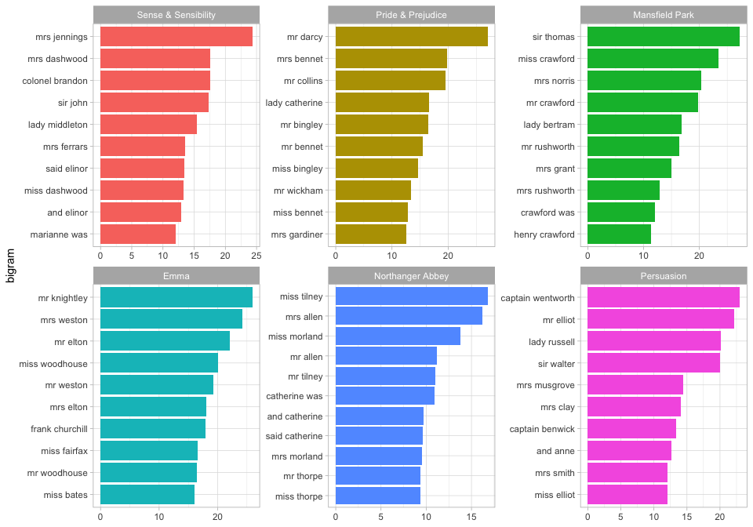

Authors: Julia Silge, Alex Hayes, Tyler Schnoebelen
License: MIT
How can we measure how the usage or frequency of some feature, such as words, differs across some group or set, such as documents? One option is to use the log odds ratio, but the log odds ratio alone does not account for sampling variability; we haven’t counted every feature the same number of times so how do we know which differences are meaningful?
Enter the weighted log odds, which tidylo provides an implementation for, using tidy data principles. In particular, here we use the method outlined in Monroe, Colaresi, and Quinn (2008) to weight the log odds ratio by a prior. By default, the prior is estimated from the data itself, an empirical Bayes approach, but an uninformative prior is also available.
Installation
You can install the released version of tidylo from CRAN with:
install.packages("tidylo")Or you can install the development version from GitHub with devtools:
# install.packages("devtools")
devtools::install_github("juliasilge/tidylo")Example
Using weighted log odds is a great approach for text analysis when we want to measure how word usage differs across a set of documents. Let’s explore the six published, completed novels of Jane Austen and use the tidytext package to count up the bigrams (sequences of two adjacent words) in each novel. This weighted log odds approach would work equally well for single words.
library(dplyr)
#>
#> Attaching package: 'dplyr'
#> The following objects are masked from 'package:stats':
#>
#> filter, lag
#> The following objects are masked from 'package:base':
#>
#> intersect, setdiff, setequal, union
library(janeaustenr)
library(tidytext)
tidy_bigrams <- austen_books() %>%
unnest_tokens(bigram, text, token = "ngrams", n = 2) %>%
filter(!is.na(bigram))
bigram_counts <- tidy_bigrams %>%
count(book, bigram, sort = TRUE)
bigram_counts
#> # A tibble: 300,903 × 3
#> book bigram n
#> <fct> <chr> <int>
#> 1 Mansfield Park of the 712
#> 2 Mansfield Park to be 612
#> 3 Emma to be 586
#> 4 Mansfield Park in the 533
#> 5 Emma of the 529
#> 6 Pride & Prejudice of the 439
#> 7 Emma it was 430
#> 8 Pride & Prejudice to be 422
#> 9 Sense & Sensibility to be 418
#> 10 Emma in the 416
#> # … with 300,893 more rowsNow let’s use the bind_log_odds() function from the tidylo package to find the weighted log odds for each bigram. The weighted log odds computed by this function are also z-scores for the log odds; this quantity is useful for comparing frequencies across categories or sets but its relationship to an odds ratio is not straightforward after the weighting.
What are the bigrams with the highest weighted log odds for these books?
library(tidylo)
bigram_log_odds <- bigram_counts %>%
bind_log_odds(book, bigram, n)
bigram_log_odds %>%
arrange(-log_odds_weighted)
#> # A tibble: 300,903 × 4
#> book bigram n log_odds_weighted
#> <fct> <chr> <int> <dbl>
#> 1 Mansfield Park sir thomas 266 27.2
#> 2 Pride & Prejudice mr darcy 230 27.0
#> 3 Emma mr knightley 239 25.9
#> 4 Sense & Sensibility mrs jennings 185 24.3
#> 5 Emma mrs weston 208 24.2
#> 6 Mansfield Park miss crawford 196 23.4
#> 7 Persuasion captain wentworth 143 23.0
#> 8 Persuasion mr elliot 133 22.2
#> 9 Emma mr elton 174 22.1
#> 10 Mansfield Park mrs norris 148 20.3
#> # … with 300,893 more rowsThe bigrams more likely to come from each book, compared to the others, involve proper nouns. We can make a visualization as well.
library(ggplot2)
bigram_log_odds %>%
group_by(book) %>%
slice_max(log_odds_weighted, n = 10) %>%
ungroup() %>%
mutate(bigram = reorder(bigram, log_odds_weighted)) %>%
ggplot(aes(log_odds_weighted, bigram, fill = book)) +
geom_col(show.legend = FALSE) +
facet_wrap(vars(book), scales = "free") +
labs(y = NULL)
Community Guidelines
This project is released with a Contributor Code of Conduct. By contributing to this project, you agree to abide by its terms. Feedback, bug reports (and fixes!), and feature requests are welcome; file issues or seek support here.